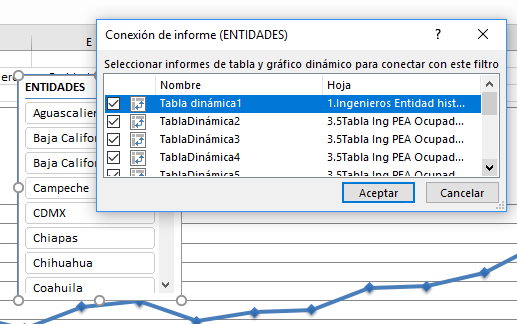

¿De qué se trata?
Una tabla dinámica es una poderosa función de Excel que sirve para crear informes de un gran conjunto de datos. A grandes rasgos, son similares a las tablas de informes convencionales, pero con una diferencia importante: los datos se pueden examinar desde distintas perspectivas.
Esta es una tabla dinámica bidimensional donde se pueden examinar determinadas columnas y filas.
El usuario puede agrupar datos en categorías, filtrar datos para incluir o excluir categorías y crear gráficos con tablas dinámicas.

En la práctica, las tablas dinámicas se pueden usar para crear lo siguiente:
- Base de datos de personal
- Base de datos de productos
- Registro de ventas de un proyecto